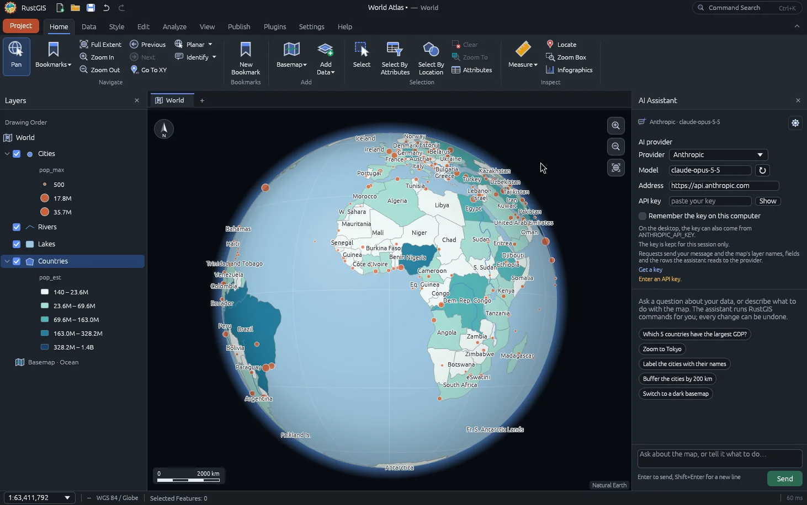

Layer management
Combine civic, utility, response, and imported points. Toggle visibility and search across attributes.
Available in workspaceETL GIS / OPEN-SOURCE GIS WORKSPACE
Your geography. Your next decision.
A complete open-source GIS for mapping, analysis, and sharing. Explore the engine; work with ETL GIS to put it into practice.
View the open-source projectTHE FULL GIS EXPERIENCE
Explore maps, analyze vectors and rasters, style your layers, and prepare publication layouts in the OpenGeos RustGIS application.
RustGIS is an independent open-source project by OpenGeos and contributors. The full application loads from web.rustgis.app only when you launch it. The point explorer below is a separate ETL GIS demonstration; its imported files are not automatically transferred.

Desktop-only database connections and external GDAL/DuckDB formats require the desktop application.
Read the RustGIS user guide ↗Save or export inside RustGIS before closing. This embedded session starts blank and does not keep browser settings. Online data, plugins and optional AI features have their own network requirements.
If the embedded workspace is unavailable, open RustGIS in a new tab ↗Full application not loaded. Browser requirements: WebGPU or WebGL2 and an Internet connection.
A LIGHTWEIGHT COMPANION
Try a small local workflow here, or launch full RustGIS above for broader formats and analysis.
All visible features · select a name to inspect
| Feature | Layer | Longitude | Latitude | Distance |
|---|
Sample workspace ready. Select a point, toggle layers, or import your own GeoJSON.
FROM EXPLORATION TO ACTION
These tools run in the lightweight Point Explorer above. Start with our sample or bring a small point dataset of your own.
Combine civic, utility, response, and imported points. Toggle visibility and search across attributes.
Available in workspaceGo from a location to its attributes. Use the map or accessible feature table to select a record.
Available in workspaceFind visible points within 0.5–5 km of a selected feature using spherical distance—not driving time.
Available in workspaceImport WGS84 Point GeoJSON and export the current filtered results. Up to 1,500 points and 2 MB per import.
Available in workspaceALREADY TAKING SHAPE IN WAVEATLAS
WaveAtlas is where these geography-first patterns come together for audio discovery. Explore the existing product to see the broader experience.
Open WaveAtlas ↗Globe projection and map views support geographic discovery in the WaveAtlas codebase.
Camera and selection logic connect a place, a view, and the next point of interest.
GeoTruth tracks coordinate source, precision, confidence, and warnings instead of treating every location as equally certain.
YOUR NEXT CHAPTER
Discuss enterprise GIS architecture, ArcGIS environments, spatial data pipelines, and a purpose-built experience for your team. Connected services and production deployment are scoped separately.
Plan your GIS workspaceThe full RustGIS application is provided by OpenGeos. ETL GIS offers workflow design, implementation and support. Our separate Point Explorer uses MapLibre and browser-local point tools.
Point Explorer sample records are synthetic, and its tools support Point GeoJSON. The full RustGIS application above offers broader analysis and editing; some capabilities require the desktop version or additional components.
Esri and ArcGIS are trademarks of Esri. This demonstration does not imply Esri affiliation or certification.